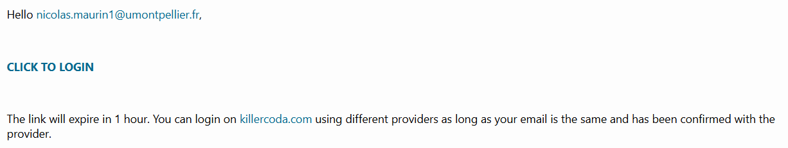
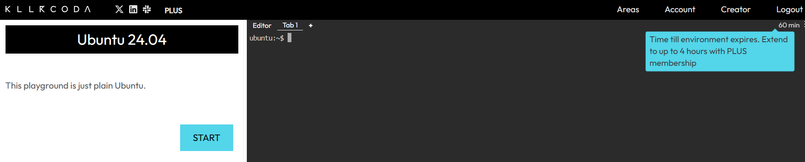
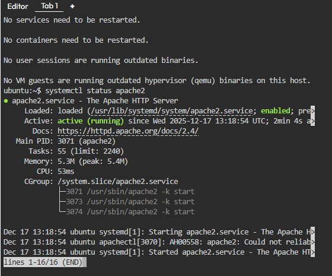
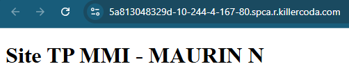
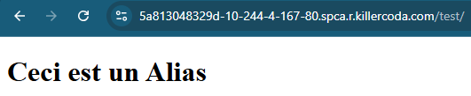
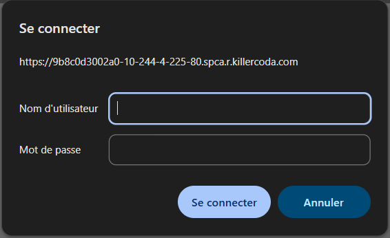
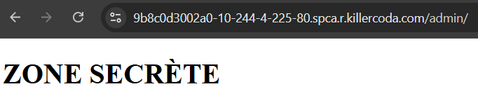
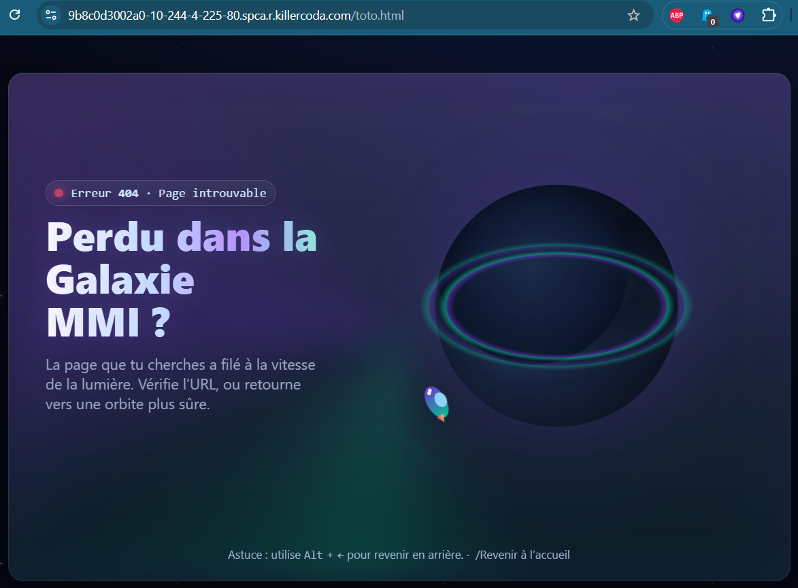

TP3 · Administration d'un serveur distant
Installer et configurer Apache
Suivez les huit parties sur Killercoda. Le bac à sable du site reproduit la machine pour vous entraîner : chaque action réussie y est cochée automatiquement. Les questions Q1 à Q7 sont à rédiger dans la page Livrable.
Prise en main de l'environnement
Attention : l'environnement est éphémère. Si vous fermez l'onglet, vous perdez votre travail. Restez sur la page jusqu'à la fin du TP (session de 60 minutes).
- Ouvrir votre navigateur et aller sur l'URL suivante : killercoda.com/playgrounds/scenario/ubuntu
- Se connecter (via Google, GitHub ou e-mail). Si vous utilisez votre adresse universitaire, vérifiez vos mails : un lien de connexion vous a été envoyé.


Une fois chargé, un terminal noir apparaît.
- Taper la commande suivante pour vérifier qui vous êtes :
whoami. Notez que vous êtes root : c'est le « super-administrateur ». Sur cet outil, vous avez tous les droits par défaut. - Vérifier la version du système :
cat /etc/os-release
Installation du service web
L'objectif est d'installer le serveur HTTP Apache.
- Mise à jour : avant toute installation, mettre à jour l'index des paquets disponibles.
Q1Quelle commande avez-vous utilisée pour mettre à jour l'index des paquets ?
- Installation : installer le paquet
apache2. La commande pour installer le serveur Apache 2 sur une distribution de type Debian ou Ubuntu (comme celle utilisée sur Killercoda) est :apt install apache2 - Vérification du service : vérifier que le service est bien lancé avec la commande
systemctl status apache2.

Q2Que signifie le statut « active (running) » ?
- Appuyer sur la touche q pour sortir du mode de visualisation du statut.
Accéder à votre site web (exposition)
Sur une machine locale, vous taperiez localhost dans le navigateur. Ici, le serveur est distant : Killercoda permet d'ouvrir un « tunnel » pour voir le site.
- Repérer l'outil de ports : cliquer, dans l'interface de Killercoda, sur le menu en haut à droite, à côté de l'horloge du temps restant dans la session. Puis sélectionner « Traffic / Ports ».
- Ouvrir le port 80 (le port standard du web HTTP) : un nouvel onglet s'ouvre avec la page par défaut d'Apache. Dans le bac à sable : onglet « Traffic / Ports ».
Q3Regarder l'URL dans la barre d'adresse de ce nouvel onglet. Ce n'est pas localhost. Expliquer brièvement pourquoi l'URL est complexe (ex : https://xxxx-80.spca.r.killercoda.com).
Laisser cet onglet ouvert : il servira à vérifier votre travail.
Modification de contenu et droits
Puisque vous êtes root par défaut, vous avez tous les droits. Pour simuler une situation réelle et comprendre les permissions, nous allons créer un utilisateur standard.
- Création d'un utilisateur : créer un utilisateur nommé
etudiant:adduser etudiant(remplir les infos demandées ou appuyer sur Entrée). - Tentative de modification (simulation d'erreur) : se connecter en tant que cet utilisateur :
su - etudiant - Tenter de créer un fichier dans le dossier du site web :
touch /var/www/html/monfichier.html - Analyser les droits du dossier :
ls -ld /var/www/html
Q4Quel message obtenez-vous ? Pourquoi ? (Aidez-vous de la commande ls -ld /var/www/html pour analyser les droits.)
- Correction des droits : revenir en mode administrateur en tapant
exit, puis changer le propriétaire du dossier/var/www/htmlpour qu'il appartienne à l'utilisateuretudiant(commandechown).
Q5Quelle est la commande exacte utilisée ?
- Modification validée : repasser en utilisateur
etudiant(su - etudiant). Supprimer le fichierindex.htmlexistant et en créer un nouveau avec le contenu :<h1>Site TP MMI - [Votre Nom]</h1> - Actualiser votre onglet navigateur pour voir le résultat.
Note : pour éditer un fichier en ligne de commande, utilisez l'éditeur nano : nano /var/www/html/index.html. Écrivez votre texte. Pour sauvegarder : Ctrl + O puis Entrée. Pour quitter : Ctrl + X.
Résultat à obtenir :

Création d'un alias
Nous voulons que l'adresse .../test pointe vers un dossier qui n'est pas dans /var/www/html.
- Préparation (en tant qu'utilisateur
etudiant) : créer un dossier~/dossier_testdans votre répertoire personnel, puis un fichierindex.htmldedans avec le texte « Ceci est un Alias ». Noter le chemin absolu de ce dossier (pwd) : probablement/home/etudiant/dossier_test. - Configuration Apache : revenir en root (
exit), se déplacer dans/etc/apache2/conf-available/et créer un fichiermon_alias.confavec nano, contenant la configuration ci-dessous (adapter le chemin si besoin).
Alias /test /home/etudiant/dossier_test
<Directory /home/etudiant/dossier_test>
Require all granted
</Directory>- Activation : activer la configuration :
a2enconf mon_alias - Recharger Apache :
systemctl reload apache2 - Tester l'URL de votre site en ajoutant
/testà la fin.
Si vous avez une erreur Forbidden (403), c'est souvent car le dossier /home/etudiant n'est pas traversable. La commande chmod o+x /home/etudiant corrige cela.
Q6Expliquer ce que fait la commande chmod o+x /home/etudiant.

Logs et diagnostic
Un développeur doit savoir pourquoi son site plante.
- Observation en temps réel : s'assurer d'être root, puis lancer la surveillance du journal d'accès :
tail -f /var/log/apache2/access.log - Génération de trafic : retourner sur votre navigateur web, actualiser la page du site, puis essayer d'accéder à une page inexistante (ex :
/toto.html). - Analyse : retourner sur le terminal : des lignes défilent. Faire Ctrl + C pour arrêter la surveillance.
Q7Copier-coller la ligne correspondant à votre erreur 404 (page inexistante). À quoi correspondent le code « 404 » et l'information « Mozilla/5.0... » visible sur la ligne ?
Sécuriser un dossier (authentification)
Contexte : vous développez une interface d'administration (/admin). Elle ne doit pas être accessible à tout le monde. Nous allons mettre en place une « Basic Authentication » via un fichier .htaccess.
- Préparation : dans
/var/www/html, créer un dossier nomméadminet, à l'intérieur, un fichierindex.htmlcontenant « ZONE SECRÈTE ». - Configuration globale : par défaut, Apache ignore les fichiers
.htaccesspour des raisons de performance. Éditernano /etc/apache2/apache2.conf, chercher le bloc<Directory /var/www/>, changerAllowOverride NoneenAllowOverride All, sauvegarder et recharger Apache (systemctl reload apache2). - Protection locale : dans le dossier
/var/www/html/admin, créer un fichier nommé.htaccessavec la configuration ci-dessous.
AuthType Basic
AuthName "Zone Admin"
AuthUserFile /etc/apache2/.htpasswd
Require valid-user- Création des identifiants : créer le fichier de mots de passe chiffrés avec l'utilitaire htpasswd :
htpasswd -c /etc/apache2/.htpasswd monlogin(remplacermonloginpar votre prénom), puis définir un mot de passe. - Test : accéder à
.../adminvia le navigateur. Une fenêtre de connexion doit apparaître : renseigner le nom d'utilisateur et le mot de passe créés précédemment.

Votre page secrète doit s'afficher !

Personnalisation des erreurs (UX)
Contexte : la page « 404 Not Found » par défaut d'Apache est austère et technique. En MMI, on soigne l'expérience utilisateur.
- Création de la page : créer un fichier
/var/www/html/oups.htmlavec un design sympa (un message « Perdu dans la Galaxie MMI ? » par exemple). - Configuration : éditer le fichier de configuration du site par défaut
/etc/apache2/sites-available/000-default.confet, à l'intérieur du bloc<VirtualHost *:80>, ajouter la ligneErrorDocument 404 /oups.html. Recharger Apache. - Application : tester une URL inexistante (ex :
.../toto.html). Votre page personnalisée doit s'afficher à la place de l'erreur standard.
Exemple :

Bac à sable simulé : rien n'est installé sur votre ordinateur. Pour le livrable, utilisez la vraie machine Killercoda.